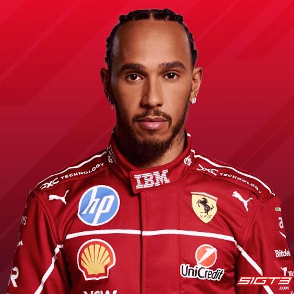
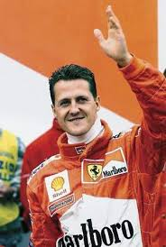
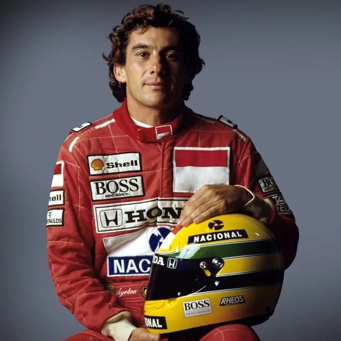

Az F1-ben 10 csapat versenyez, mindegyik két autóval. A csapatok óriási szervezetek: több száz mérnök, aerodinamikus, szerelő és stratégiai szakember dolgozik azon, hogy a lehető leggyorsabb autót építsék.
A Ferrari a legrégebbi és legsikeresebb csapat. A Red Bull Racing az elmúlt évek domináns együttese, míg a Mercedes a 2014–2020 közötti turbó-hibrid korszakot uralta.
1. Lewis Hamilton
A brit pilóta a statisztikák alapján a sportág történetének legsikeresebb versenyzője,
aki hét világbajnoki címével beállította Michael Schumacher rekordját. Pályafutását a
McLarennél kezdte, ahol már második szezonjában, 2008-ban felért a csúcsra. Igazi dominanciáját
azonban a Mercedes csapatával érte el, ahol hat további bajnoki címet szerzett a hibrid korszakban.
Ő tartja a legtöbb futamgyőzelem (105), a legtöbb pole pozíció és a legtöbb dobogós helyezés rekordját
is. Hamilton nemcsak a pályán, hanem azon kívül is aktív, társadalmi kérdésekben és a divatvilágban
is meghatározó alak. Karrierje következő nagy fejezete 2025-ben kezdődik, amikor a Ferrarihoz igazol.

2. Michael Schumacher
A „Kerpeni Kaiser” neve évtizedekig a győzelem szinonimája volt, és ő tette globális szupersztárrá a modern
Formula–1-et. Első két világbajnoki címét a Benettonnal nyerte a kilencvenes évek közepén, majd a Ferrarihoz
igazolt, hogy feltámassza a küszködő olasz márkát. Kitartása és technikai precizitása meghozta gyümölcsét:
2000 és 2004 között zsinórban ötször lett bajnok a vörös autóval. Schumacher híres volt könyörtelen
versenyszelleméről és arról, hogy a fizikai felkészültséget új szintre emelte a sportágban. 2012-es végleges
visszavonulásakor szinte minden létező rekordot ő birtokolt. Tragikus síbalesete óta a nyilvánosságtól
elzárva él, de öröksége megkerülhetetlen.

3. Ayrton Senna
Sokan őt tartják a valaha volt leggyorsabb és legtehetségesebb pilótának, aki misztikus és megalkuvást nem tűrő
stílusával bűvölte el a rajongókat. Pályafutása során három világbajnoki címet nyert a McLaren színeiben, és Alain
Prosttal vívott párharca a sportág aranykorának számít. Senna az esős versenyek és az időmérő edzések specialistája
volt, aki gyakran határokat feszegetve autózott. Hazájában, Brazíliában nemzeti hősnek számított, mivel rengeteget
jótékonykodott és reményt adott az embereknek. 1994-es imolai tragédiája sokkolta a világot, és alapjaiban változtatta
meg az F1 biztonsági előírásait. Legendája ma is él, sisakjának sárga-zöld színei az autóversenyzés szimbólumaivá váltak.
